Push-button mount: the right angles, and a mount that grows out of the headrest
This is on the F3 headrest. Part 1 works out where the kit's 65 mm switch should be and what angles the rod therefore needs. Part 2 builds those angles into a mount that sits in the side of the headrest. This is for review only.
1. Where the switch should be
- Target: the switch sits beside the head, at the temple or cheek just in front of the ear, with its face about 15 mm from the skin, so the child presses it by turning or tilting the head. I worked this out for the 2-year-old and 5-year-old head models, with the switch 10, 25 and 40 mm in front of the ear.
- Kit parts: the 65 mm button stack (cap, base and mount) is about 35 mm thick. The kit's
pvc_20mm_vertical_connectorholds the switch with its face parallel to the rod, and the rod axis sits about 17 mm behind the switch's back. - So the rod axis has to run about 67 mm out from the skin. That is why the rod has to angle outward. Straight ahead, the switch would end up inside the head.
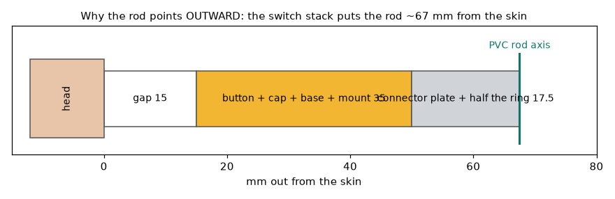
The old socket pointed the rod 37° outward, because it followed the curve of the shell. At ear level the switch would sit far off the cheek.
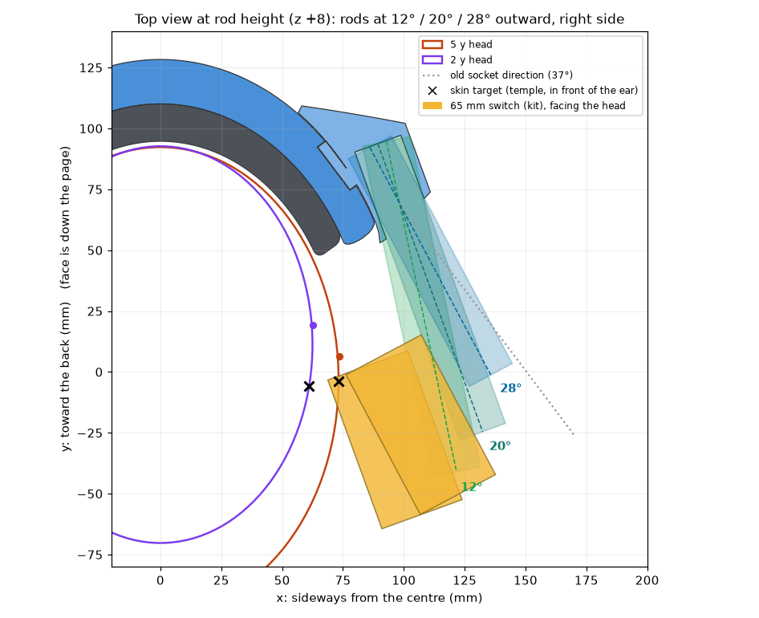
2. The three angles
| Mount | Use it when | Rod length past the headrest |
|---|---|---|
| 12° outward | The switch is well in front of the ear (cheek), or on a small head | about 110 mm |
| 20° outward default | The switch is at the temple, about 25 mm in front of the ear (most children) | about 90–125 mm |
| 28° outward | The switch is close to the ear, or on a wide head | about 70–85 mm |
For every case I tested (two head sizes, three switch positions), one of the three angles puts the switch within 2–9 mm of the target, and the rod length takes care of how far forward it sits. The rod tilts down 3° and runs at ear/temple height, under the temple wing and the strap slot. Neither the rod nor the switch touches the headrest, the foam or either head model.
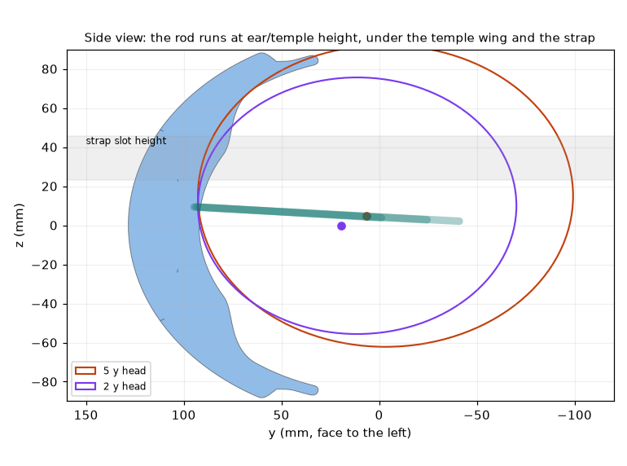
One thing the angle can't fix: because the rod runs past the head at an angle, the switch face ends up about 30° off from facing the head straight on. That is what the kit's pvc_head_mount 17° and 22° parts are for. Clamp the 22° one near the end of the rod and the switch turns back to within about 10°. The therapist sets the final angle at fitting.
3. The integrated mount
Both versions anchor in the same triangle pocket as before: the shape carries the load, and one M3 screw from the head side, reached through the hole in the foam, locks it. The back of the mount matches the headrest's outer surface. It narrows forward into a slim collar that holds the 20 mm PVC, with the kit's two wood-screw pilot holes. The rod comes out at the front of the side, just under the temple wing. Each mount is made in the three angles, mirrored for left and right.
W1. Pod recommended
The headrest is unchanged. When no button is fitted, a small flush plug fills the triangle pocket. Mount volume: 26–31 cm³.
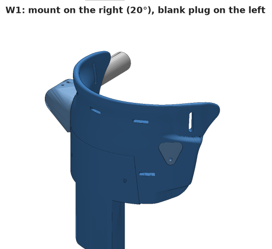
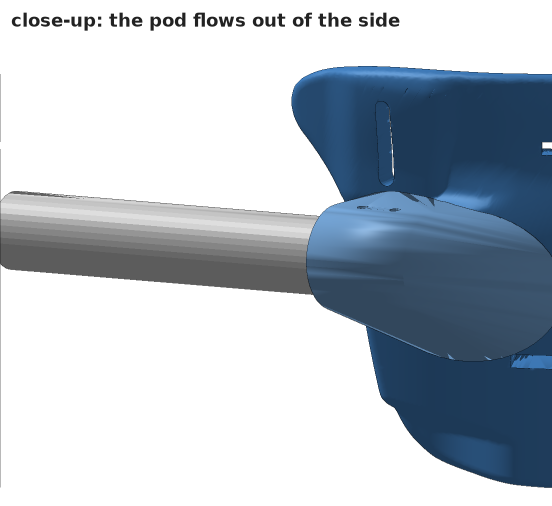
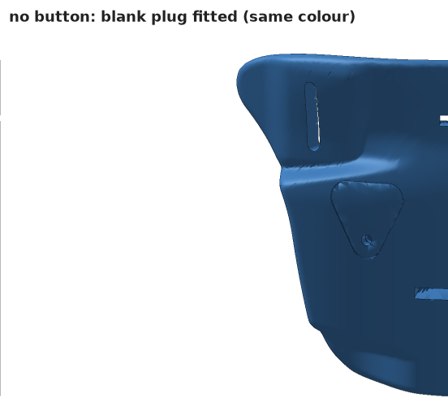
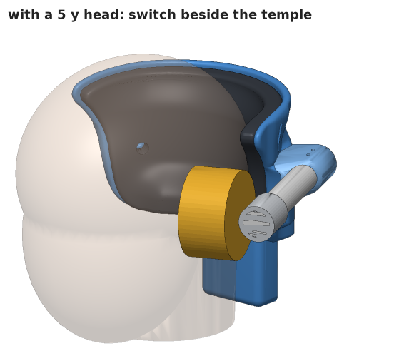
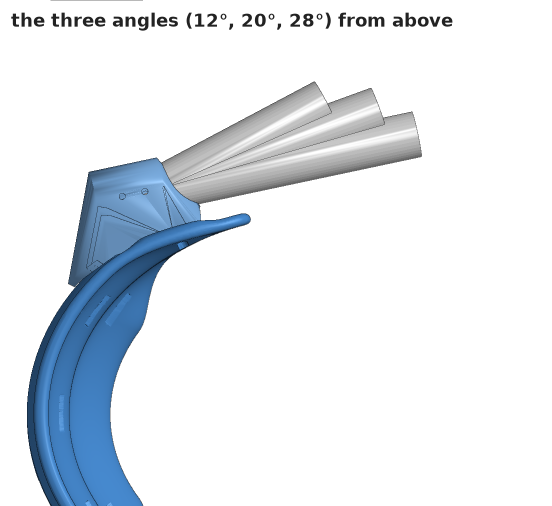
W2. Lane
A short, soft recess in the side of the headrest lets the rod sit half-sunk where it leaves, so the pod is lower and smaller (19–23 cm³) and sits tighter to the headrest. The cost: with no button fitted, the recess needs a larger plug (3.4 cm³) to look clean.
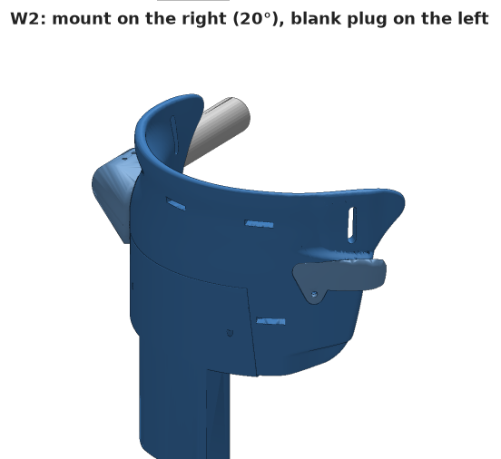
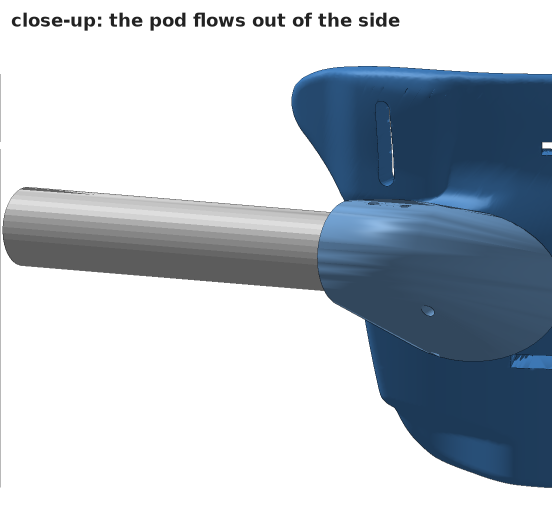
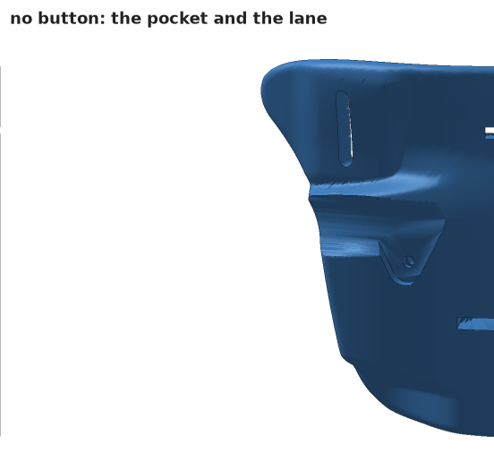
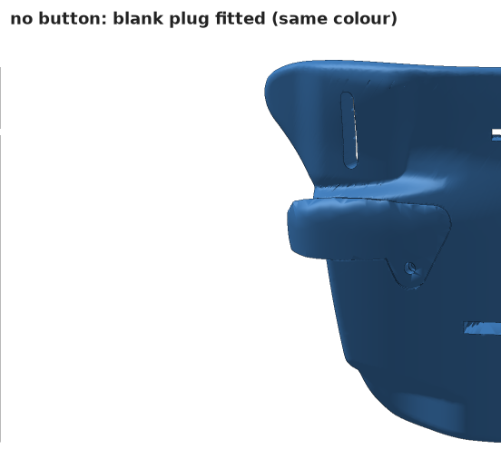
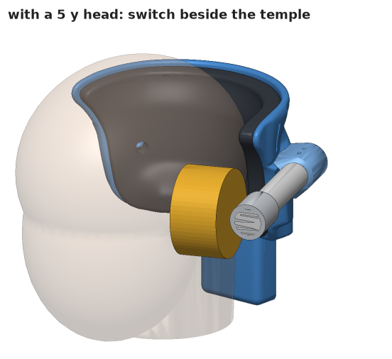
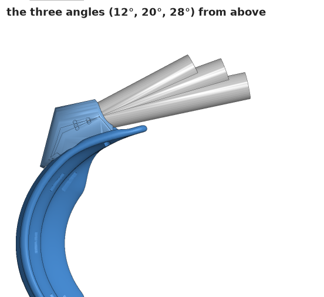
Things to consider
- Strength: our earlier target was 20–25 Nm at the mount, for a child hitting or grabbing it. On F3 the side is about 14 mm thick here, so I'd deepen the triangle pocket from 4 to 8 mm. That doubles the bearing area and costs nothing in looks. It needs a pull test like the strap.
- Printing the pod: print it standing on its back face, so the collar is a vertical tube with no supports inside the socket.
- Switch position is the therapist's call. The three angles cover temple, cheek and near-ear positions for 2–5-year-olds. If your therapists usually put the switch somewhere else (behind the ear, for example), I'll redo the angles for that.
- Left/right: a button can go on either side, or both. The plug keeps the unused side clean.